第11讲 章节复习专题：有理数及其运算
第11讲 章节复习专题：有理数及其运算
(14类热点题型讲练)

目录
【考点一 相反意义的量】 1
【考点二 求一个数的相反数、绝对值】 2
【考点三 绝对值的非负性】 3
【考点四 用科学记数法表示绝对值大于1的数】 5
【考点五 含乘方的有理数四则混合运算】 6
【考点六 有理数的混合运算中错题复原问题】 9
【考点七 带“非”字的有理数的分类】 13
【考点八 用数轴上的点表示有理数】 15
【考点九 根据点在数轴的位置判断式子的正负】 18
【考点十 有理数的除法中绝对值之分类讨论问题】 19
【考点十一 新定义型有理数混合运算】 23
【考点十二 有理数混合运算中的实际应用】 25
【考点十三 数轴上折叠探究问题】 28
【考点十四 利用点在数轴上的几何意义化简绝对值】 32

【考点一 相反意义的量】
例1.（2024·湖北宜昌·模拟预测）若长江水位升高 时水位变化记作
时水位变化记作 ，那么水位下降
，那么水位下降 时水位变化记作（ ）
时水位变化记作（ ）
A．
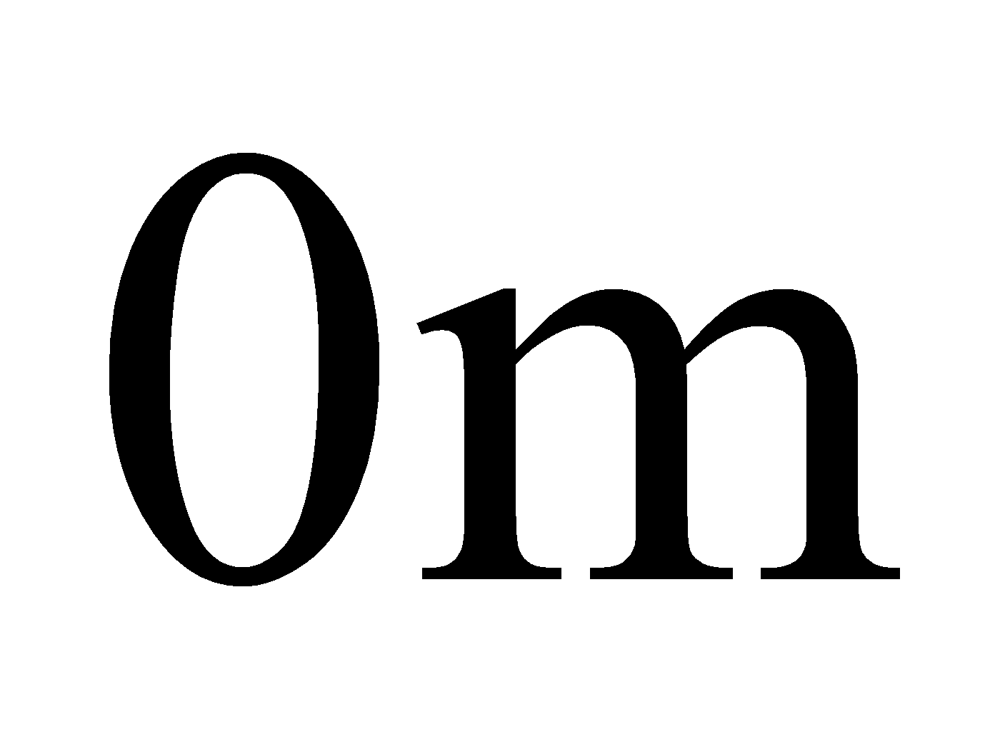
B． C．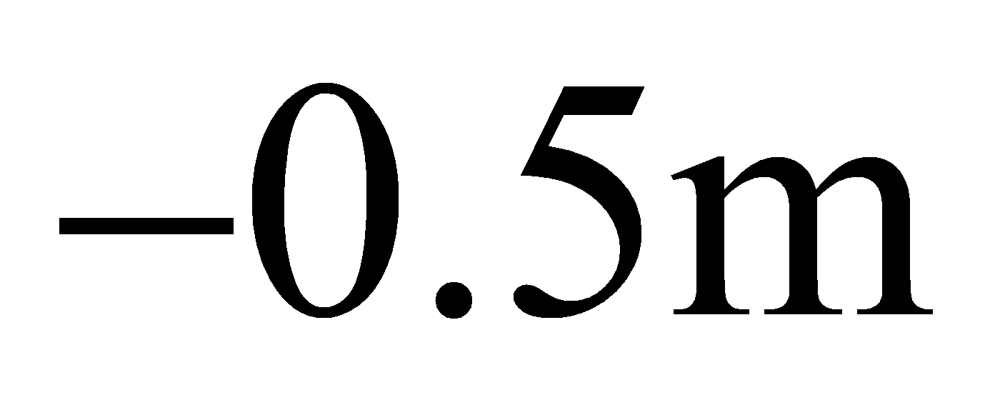
D．
巩固训练
1.（2024·陕西榆林·三模）两千多年前，中国人就开始使用负数．若某仓库运进小麦3吨，记为 吨，那么仓库运出小麦2吨应记为（ ）
吨，那么仓库运出小麦2吨应记为（ ）
A． 吨 B．
吨 B．
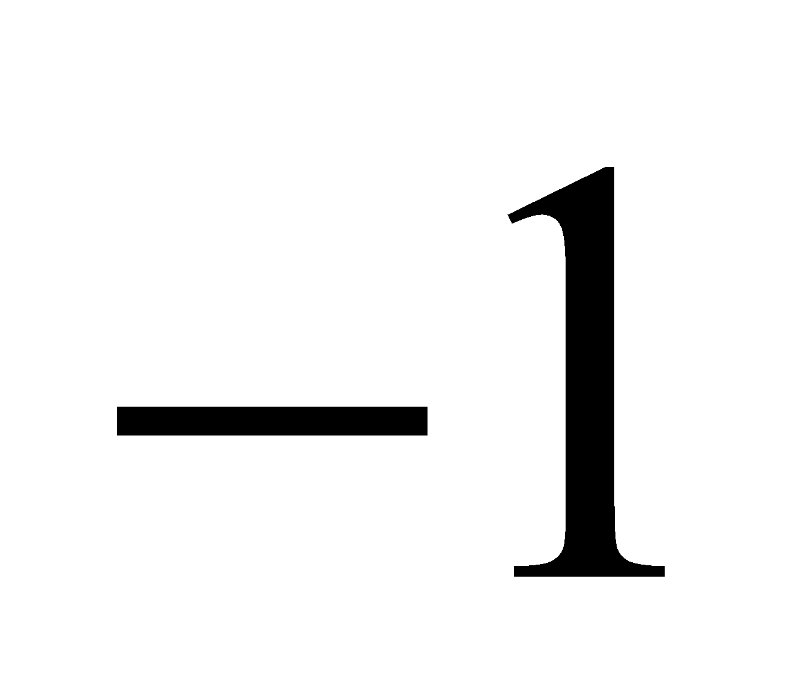
吨 C． 吨 D．
吨 D． 吨
吨2.（23-24九年级下·海南省直辖县级单位·阶段练习）我国部分地区的日温差较大，“早穿棉袄午穿纱”这句谛语描绘的就是某地这种奇妙的气温变化现象．若某市某日上午温度上升 记作
记作 ，那么傍晚温度下降
，那么傍晚温度下降 记作（ ）
记作（ ）
A． B． C．
C．
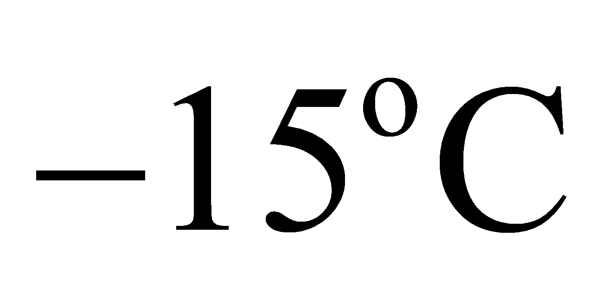
D．3.（2024·湖北荆州·模拟预测）某地冬季里某一天的气温为 ，那么“”的含义是（ ）
，那么“”的含义是（ ）
A．零下3摄氏度 B．零上3摄氏度
C．降低3摄氏度 D．升高3摄氏度
【考点二 求一个数的相反数、绝对值】
例2．（2024·四川达州·中考真题）有理数2024的相反数是（ ）
A．2024 B． C．
C． D．
D．
巩固训练
1.（23-24七年级上·浙江金华·期中） 的绝对值是 ，
的绝对值是 ， 的相反数是 ．
的相反数是 ．
2.（23-24七年级上·广东惠州·阶段练习） 的相反数为 ；
的相反数为 ； 的绝对值是 ；绝对值是2的数是 ．
的绝对值是 ；绝对值是2的数是 ．
3.（23-24七年级上·广东广州·期中）（1） ；（2）
；（2） ；（3）
；（3）
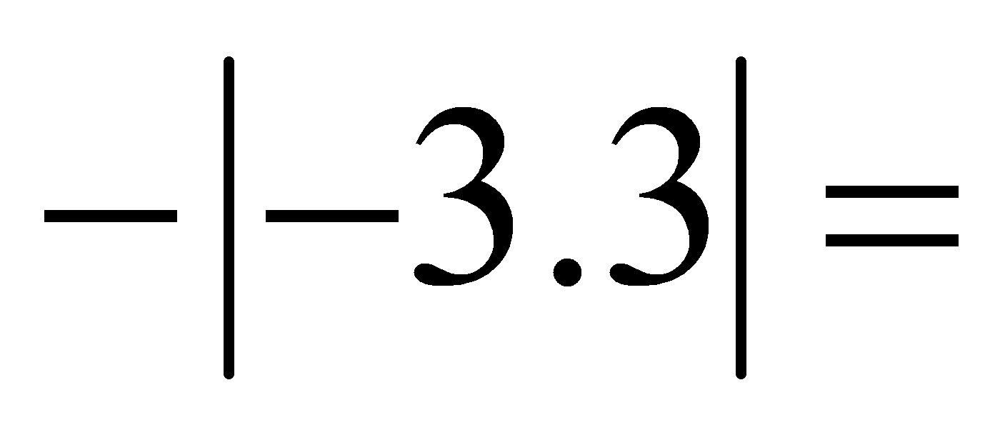
；（4） ．
．【考点三 绝对值的非负性】
例3. （23-24六年级下·全国·假期作业）若 ，则
，则
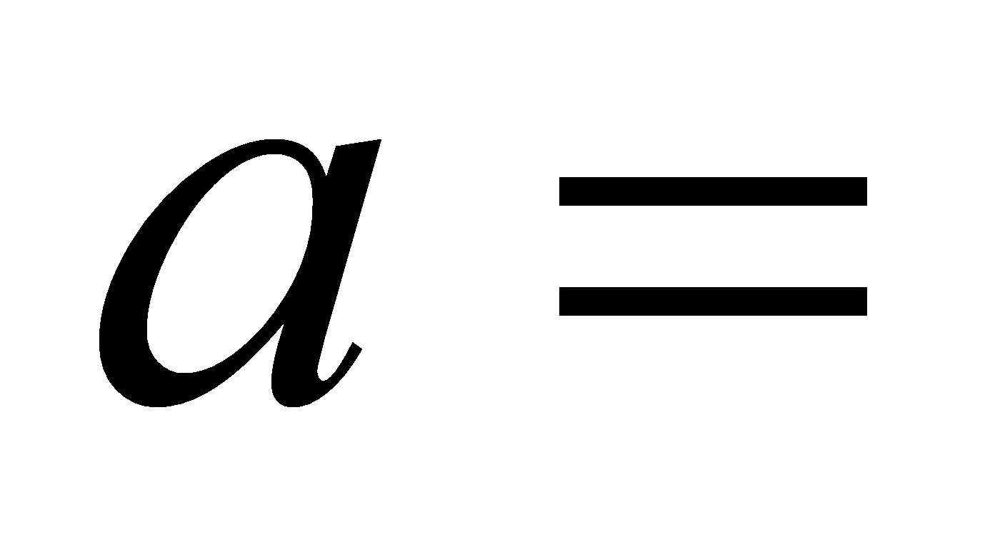
， ．
．巩固训练
1.（23-24七年级上·江苏泰州·阶段练习）已知b、c满足 ，则
，则 的值是 ．
的值是 ．
2.（23-24六年级下·黑龙江哈尔滨·期中）已知 为有理数，则
为有理数，则 的最小值为 ．
的最小值为 ．
3.（23-24七年级上·山东青岛·阶段练习）a是最大的负整数，且a、b、c满足 ．那么a＝ ，b＝ ，c＝ ．
．那么a＝ ，b＝ ，c＝ ．
【考点四 用科学记数法表示绝对值大于1的数】
例4. （2023春·江西南昌·九年级校考阶段练习）我国神舟十三号载人飞船的起飞推力为 牛．将用科学记数法表示应为 ．
牛．将用科学记数法表示应为 ．
巩固训练
1.（2023秋·山西太原·七年级校考期末）据国家卫健委6月20日通报，截至2021年6月19日，31个省（自治区、直辖市）和新疆生产建设兵团累计报告接种新冠病毒疫苗 万剂次．其中，万用科学记数法表示为（ ）
万剂次．其中，万用科学记数法表示为（ ）
A． B．
B．
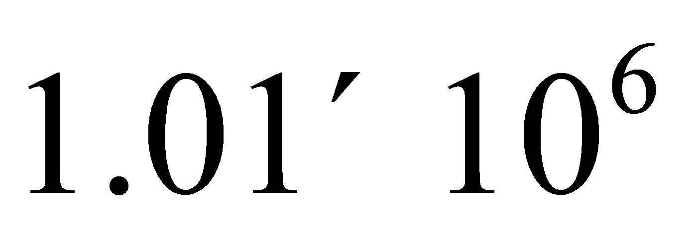
C．
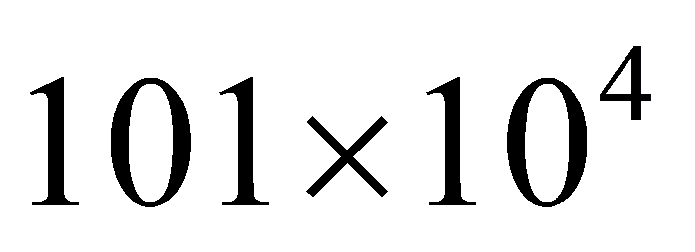
D．
2.（2023秋·山西太原·七年级校考期末）2016年5月下旬，中国大数据博览会在贵阳举行，参加此次大会的约有
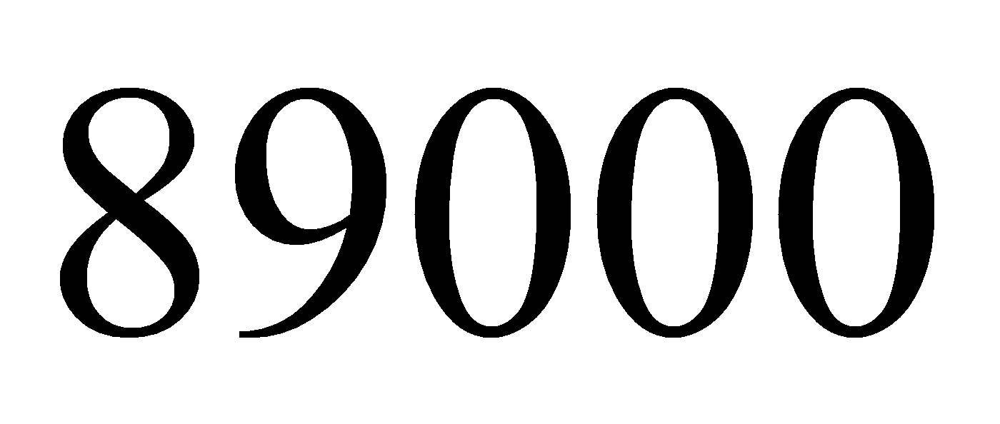
人，将用科学记数法表示为 ．3.第二届“一带一路”国际合作高峰论坛于 年4月
年4月 日至
日至 日在北京召开，“一带一路”建设进行5年多来，中资金融机构为“一带一路”相关国家累计发放贷款约
日在北京召开，“一带一路”建设进行5年多来，中资金融机构为“一带一路”相关国家累计发放贷款约
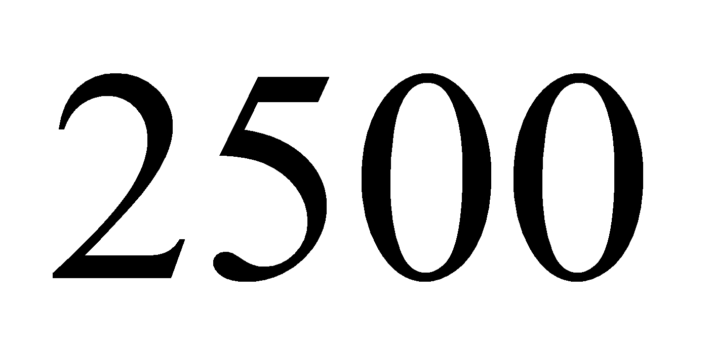
亿元，重点支持了基础设施、社会民生等项目．数据亿用科学记数法表示为 ．【考点五 含乘方的有理数四则混合运算】
例5. 计算：
巩固训练
1.（2023秋·陕西渭南·七年级统考期末）计算： ．
．
2.（2023·全国·七年级假期作业）计算：
(1)
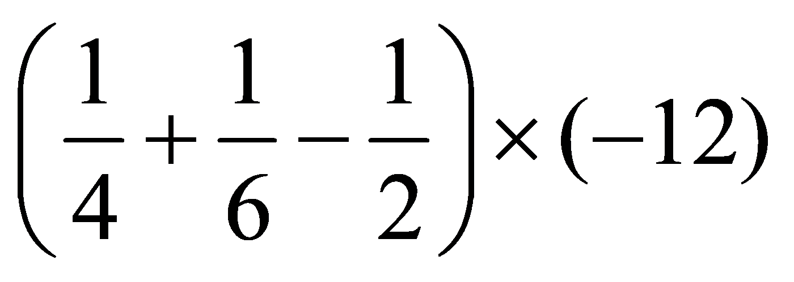
； (2)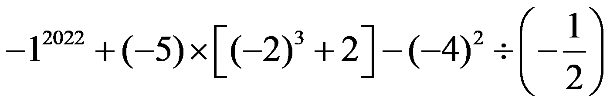
．(3)
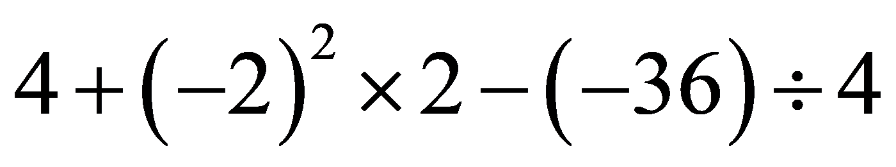
； (4)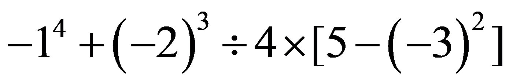
．3．（23-24六年级下·全国·假期作业）计算下列各题：
(1)
(2)
(3)
(4)
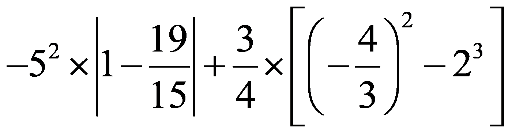
【考点六 有理数的混合运算中错题复原问题】
例6. （2023秋·山东东营·六年级统考期末）课代表发下作业本之后，小刚同学发现有一个题做错了，检查了多遍也没有找出错误的原因，你能帮他纠错吗？
原题是：计算：
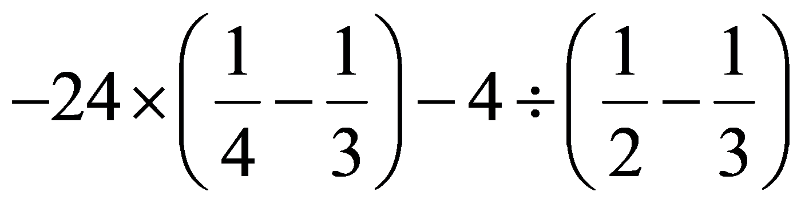
这是小刚的计算过程：
解：原式
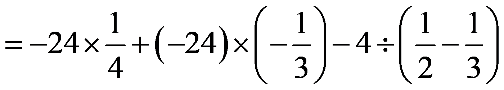
第一步 第二步
第二步
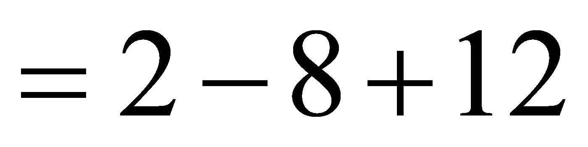
第三步 ． 第四步
． 第四步
观察小刚的计算过程回答下列问题：
(1)小刚在进行计算第一步时运用了______律；
(2)他在计算中出现了错误，你认为他在第______步出错了？
(3)请你给出正确的解答过程．
巩固训练
1.在计算
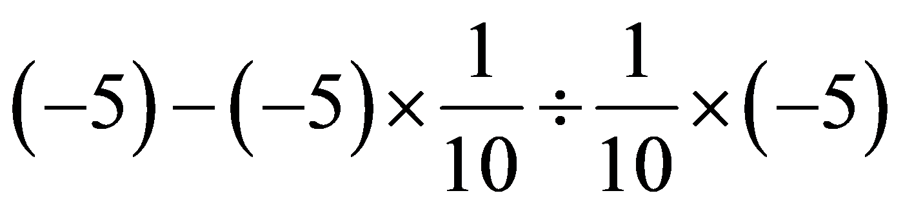
时，小明的解法如下：解：原式
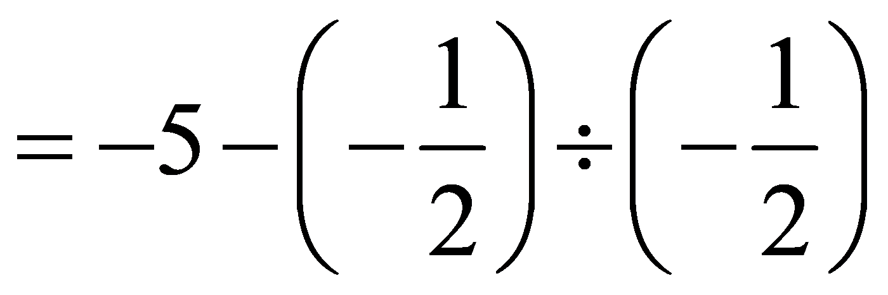
（第一步） （第二步）
（第二步）
 （第三步）
（第三步）
回答：
(1)小明的解法是错误的，主要错在第_______步，错因是___________；
(2)请在下面给出正确的解答过程．
2.阅读下列解题过程：
解：原式
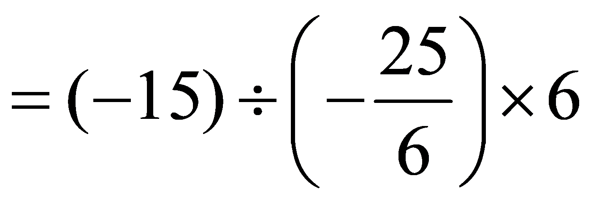
（第一步）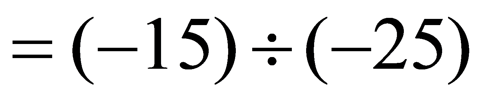
（第二步） （第三步）
（第三步）
解答问题：
(1)上面解答过程有两个错误，第一处是第_______步，错误的原因是______；第二处是第_______步，错误的原因是_______．
(2)请你正确解答本题．并请你根据平时的学习经验，就有理数的计算过程还需要注意的事项给同学们提出一条建议．
3.（2023秋·河南平顶山·七年级统考期末）解答下列各题
(1)计算：
(2)认真阅读材料，解决问题：
计算：
分析：利用通分计算
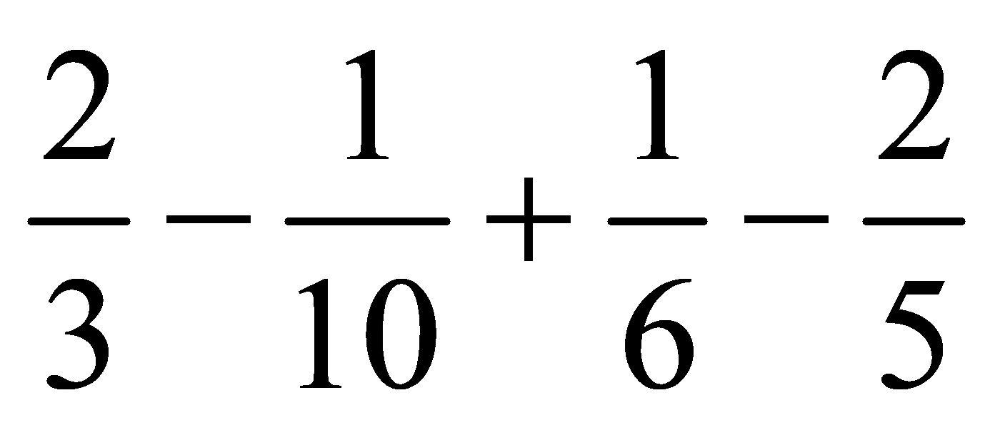
的结果很麻烦，可以采用以下方法进行计算；解：原式的倒数是：
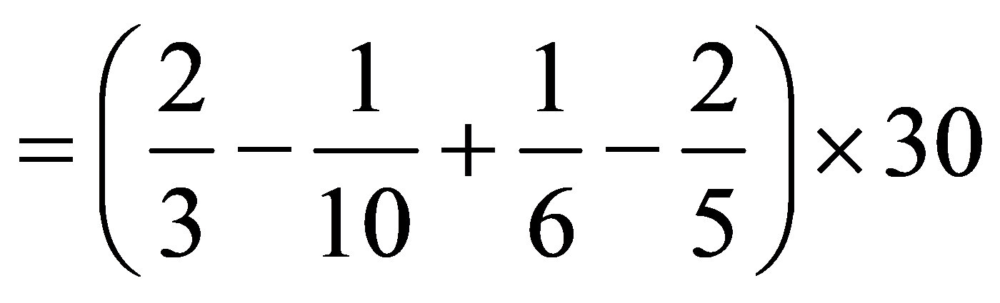


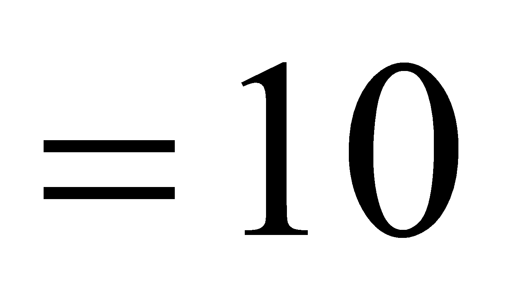
故原式 ．
．
请你根据对所提供材料的理解，选择合适的方法计算：
【考点七 带“非”字的有理数的分类】
例7．（23-24七年级上·广东佛山·阶段练习）把下列各数分别填入相应的集合里．
 ，
， ，0，
，0， ，
， ，2006，
，2006， ，
，
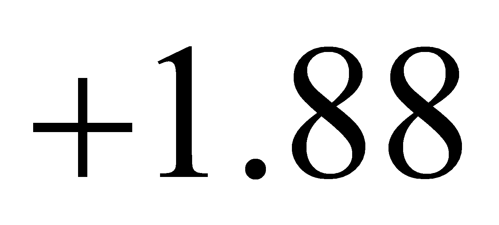
(1)负数集合：｛ …｝；
(2)分数集合：｛ …｝；
(3)整数巢合：｛ …｝．
巩固训练
1．（22-23七年级上·云南昆明·期中）将下列各数填入相应的集合内：
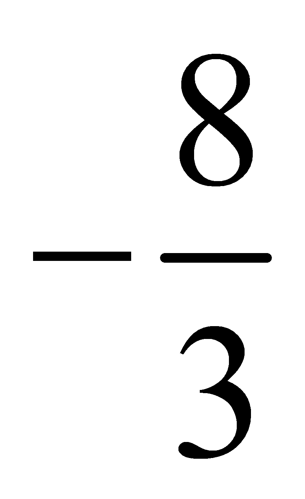
， ，4，0，
，4，0， ，
， ，
， ，
， ．
．非负整数：{____________…}；
分数：{________________…}；
负数：{________________…}．
2．（22-23七年级上·云南昆明·期中）把下列各数填在相应的大括号里：
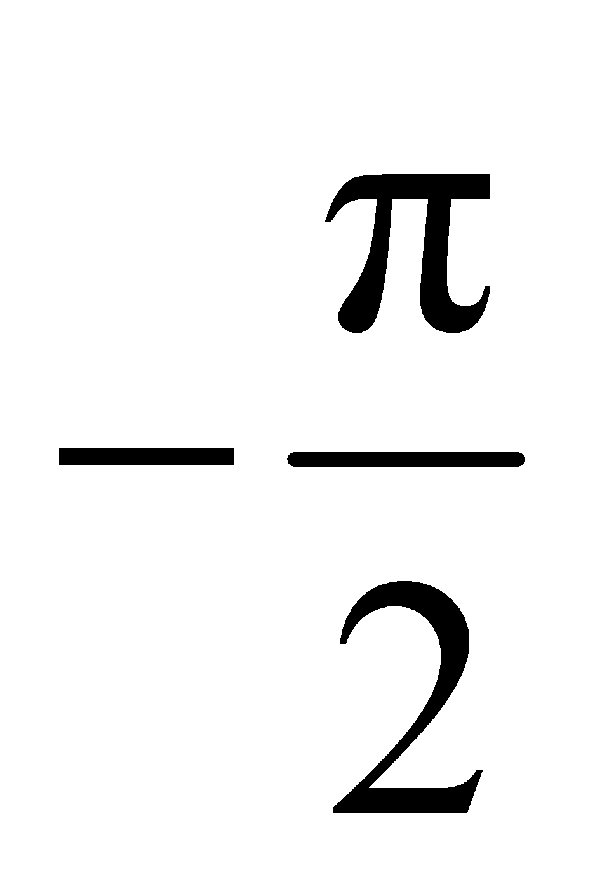
， ，
， ，0，6，，
，0，6，，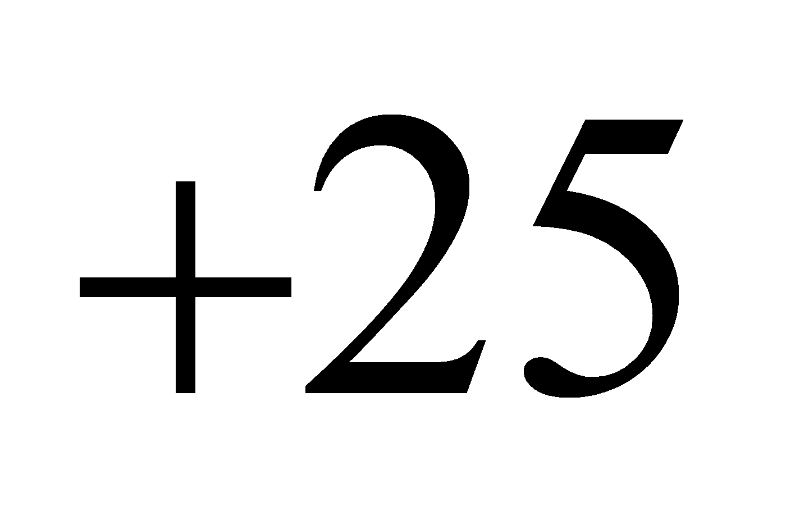
．非负整数集合：{ …}；
负分数集合：{ …}；
非正有理数集合：{ …}．
3．（23-24七年级上·辽宁营口·阶段练习）把下列各数填入它所属的集合内
 ，
， ，
， ，
， ，0，
，0，
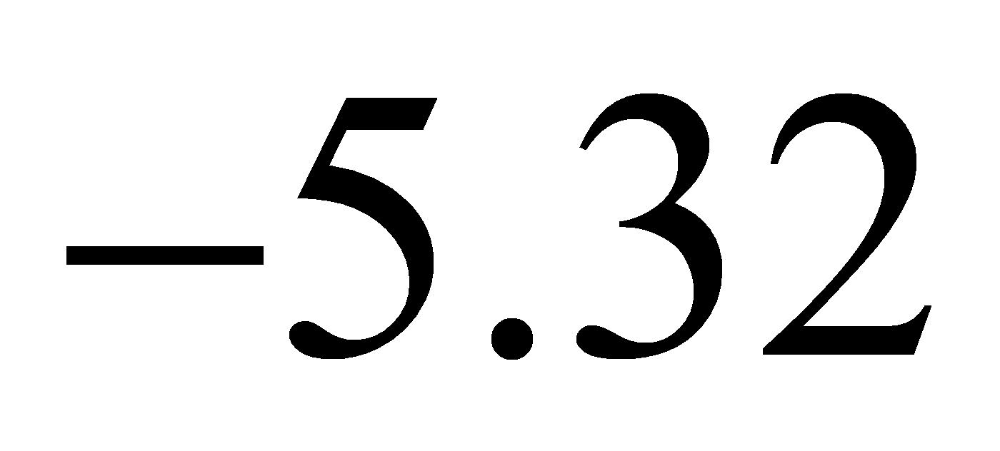
(1)整数集合{____________________……}；
(2)分数集合{____________________……}；
(3)非负数集合{____________________……}．
【考点八 用数轴上的点表示有理数】
例8：（24-25七年级上·辽宁沈阳·单元测试）把数 ，
， ，
， ，
， ，
， ，
， 在数轴上表示出来，然后用“
在数轴上表示出来，然后用“ ”把它们连接起来．
”把它们连接起来．
【变式训练】
1．（24-25七年级上·内蒙古巴彦淖尔·阶段练习）把下列各数标在数轴上，并按从小到大的顺序用“ ＜ ”连接起来．
 ，
， ， 0，
， 0， ，
，  ，
，
2．（24-25七年级上·新疆阿克苏·阶段练习）在数轴上表示下列各数，并将这些数按从小到大的顺序排列，再用“＜”连接起来：
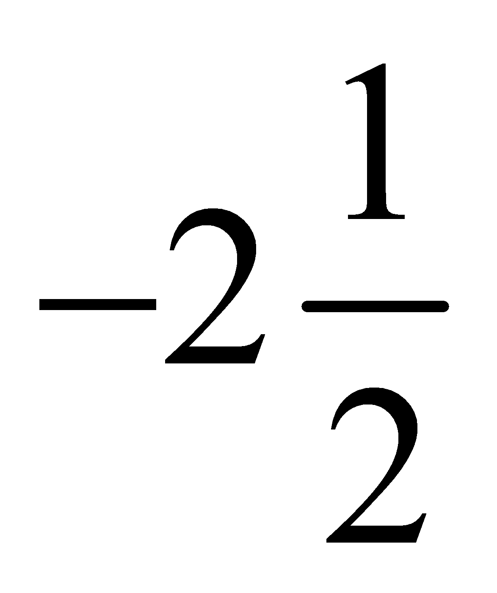
， ，
， ，
，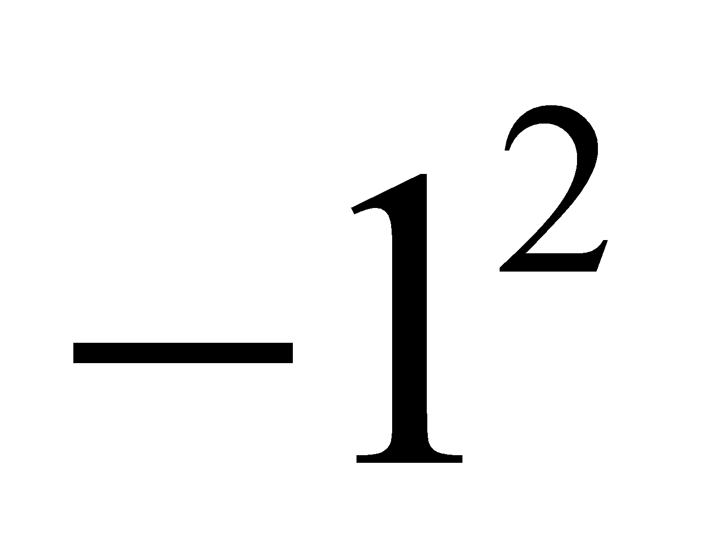
， ，
， ．
．3．（24-25七年级上·江苏无锡·阶段练习）在数轴上画出各数，并将下列各数按从小到大的顺序用“<”号连接起来．
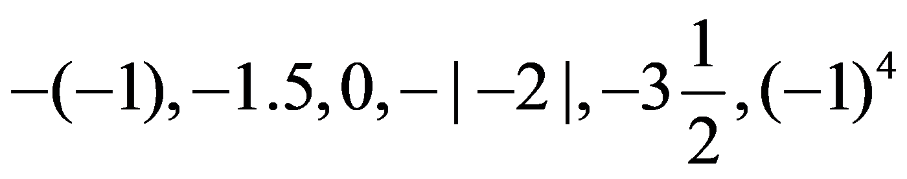
．4．（23-24七年级上·广东广州·期中）已知下列有理数：
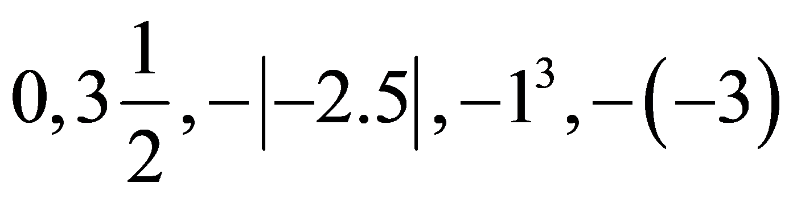
．(1)这些有理数中，整数有_____________个，非负数有_____________个．
(2)画出数轴并在数轴上标出上述有理数，并按从小到大的顺序用“＜”连接起来．
【考点九 根据点在数轴的位置判断式子的正负】
例9. （2024·江苏徐州·二模）实数a、b在数轴上的位置如图所示，则下列结论正确的是（ ）

A． B．
B． C．
C．  D．
D．
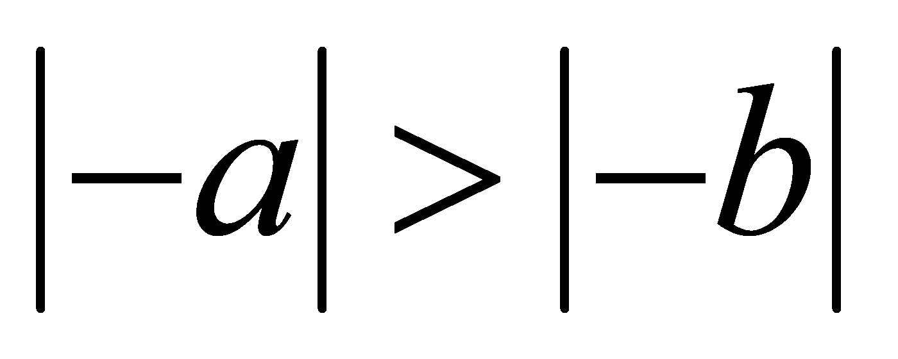
巩固训练
1.（2023·江西九江·二模）如图，数轴上点A和点B分别表示数a和b，则下列式子正确的是（ ）
A． B．
B． C．
C． D．
D．
2.（23-24六年级下·黑龙江绥化·阶段练习）已知a、b、c三个数的位置如图所示，则下列结论不正确的是（ ）
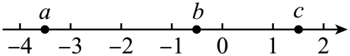
A． B．
B． C．
C．
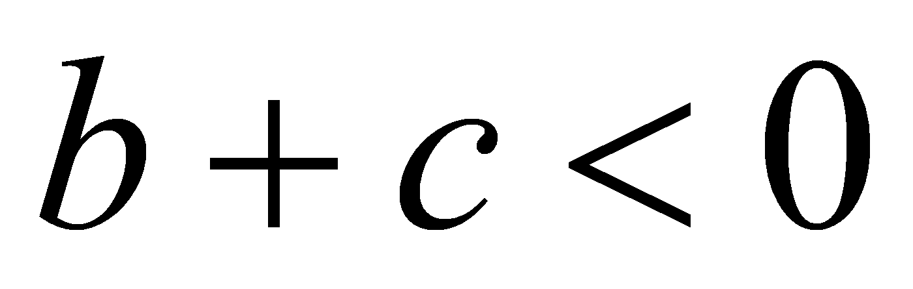
D．
3.（22-23七年级上·广西钦州·期末）有理数a，b在数轴上的对应位置如图所示，下列选项正确的是（ ）
A． B．
B． C．
C． D．
D．
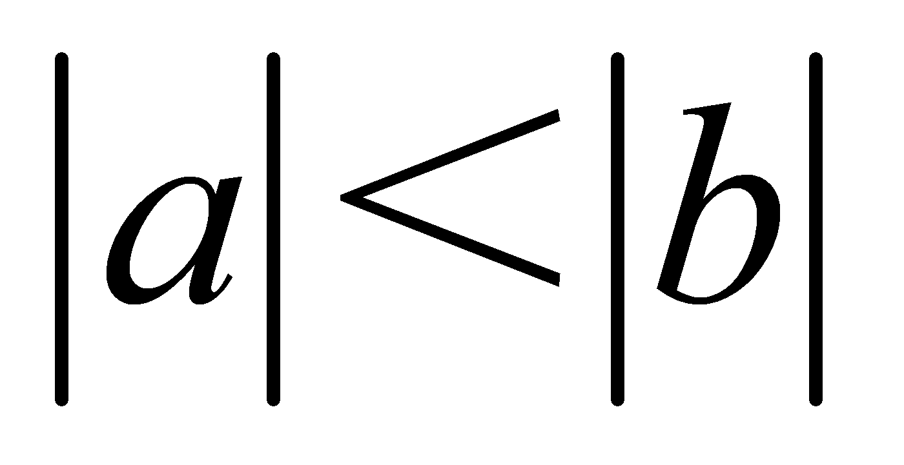
【考点十 有理数的除法中绝对值之分类讨论问题】
例10. （2023秋·福建泉州·七年级统考期末）单项式a是一个正数，且 ，那么
，那么 的值为 ．
的值为 ．
巩固训练
1.（2023秋·七年级单元测试）如果  ，
，  ，
，  是非零有理数，那么
是非零有理数，那么  的所有可能的值为（ ）．
的所有可能的值为（ ）．
A．-4，-4，0，2，4 B．-4，-2，2，4 C．0 D．-4，0，4
2.（23-24七年级上·云南昆明·期中）阅读下列材料：
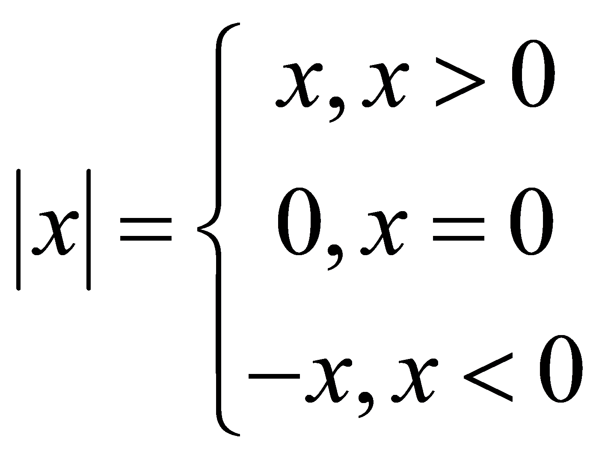
，即当 时，
时，
 ．用这个结论解决下面问题：
．用这个结论解决下面问题：(1)已知 ，
， 是有理数，
是有理数，
①当 ，
， 时，则
时，则
 ________；
________；
②当， 时，则________；
时，则________；
③当 ，时，则_______；
，时，则_______；
(2)已知，， 是有理数，当
是有理数，当 时，求
时，求
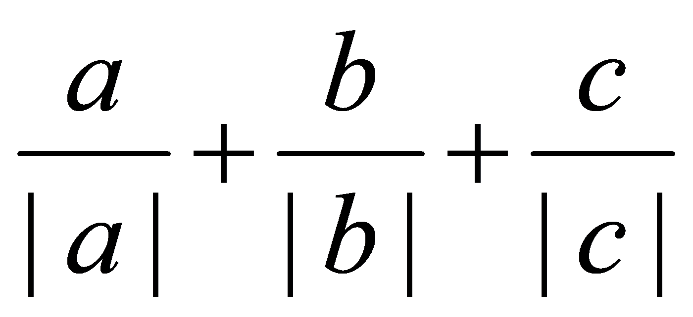
3.（23-24七年级上·福建福州·期末）阅读下列材料： ，即当
，即当 时，
时， ，当
，当 时，
时，
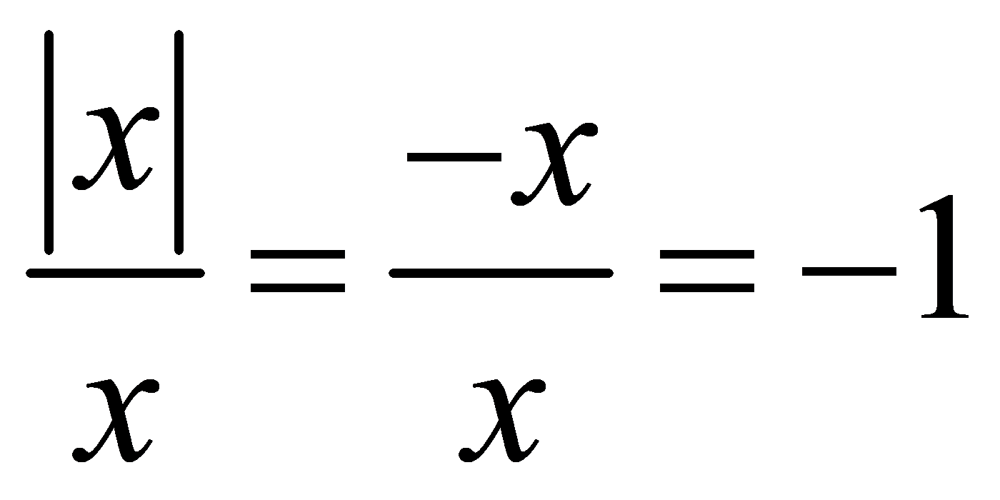
，运用以上结论解决下面问题：(1)已知m，n是有理数，当 时，则
时，则
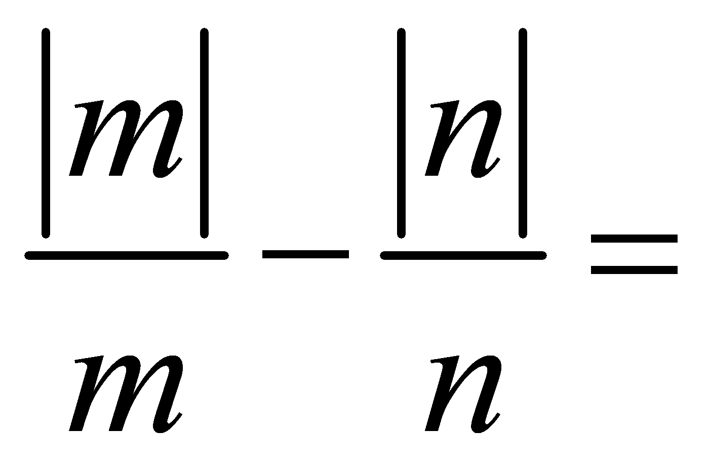
______；(2)已知m，n，t是有理数，当 时，求
时，求 的值；
的值；
(3)已知m，n，t是有理数，
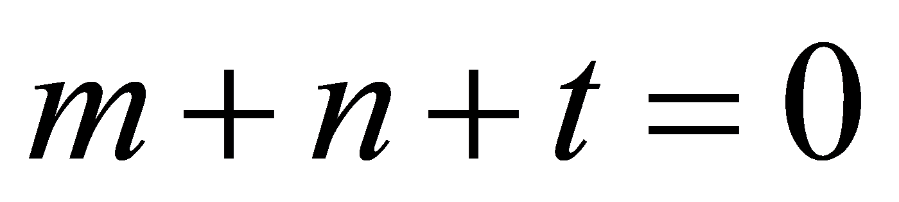
，且，求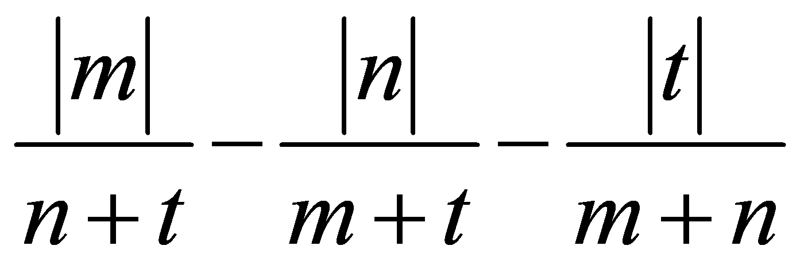
的值．【考点十一 新定义型有理数混合运算】
例11. 计算规定
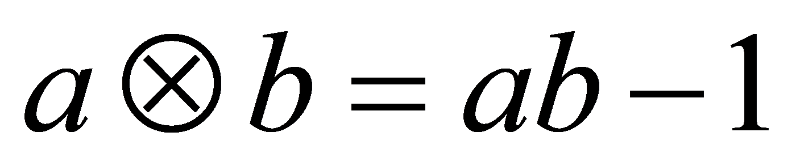
，试计算： 的值．
的值．巩固训练
1.洪洪同学在电脑中设置了一个有理数的运算程序：输入数“ ”加“★”键，再输入“
”加“★”键，再输入“ ”，就可以得到运算
”，就可以得到运算 ．按此程序
．按此程序 ．
．
2.（2023·河北沧州·校考二模）若 ，
， 是有理数，定义一种运算“▲”：
是有理数，定义一种运算“▲”：
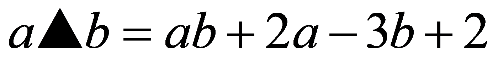
，(1)计算
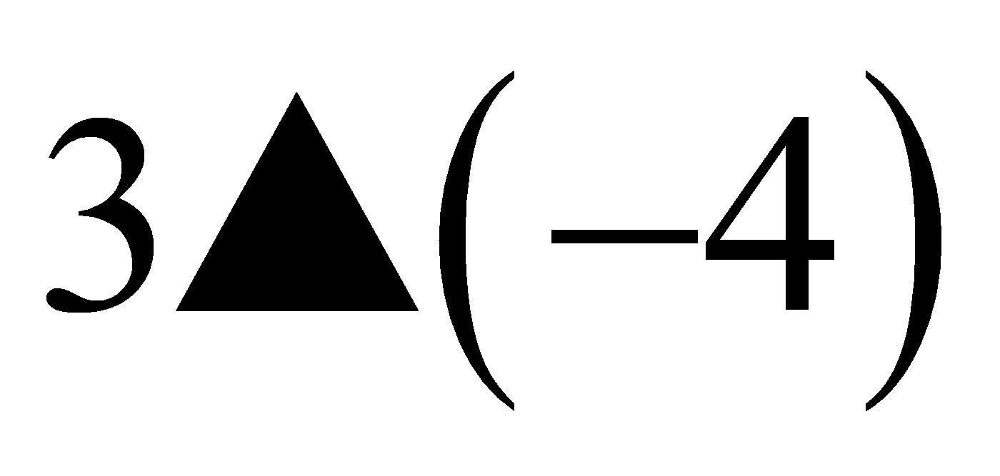
的值；(2)计算
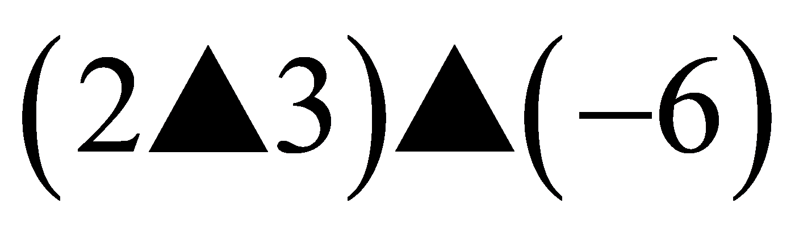
的值；(3)定义的新运算“▲”对交换律是否成立？请写出你的探究过程．
3.若我们定义 ，其中符号“*”是我们规定的一种运算符号．例如：
，其中符号“*”是我们规定的一种运算符号．例如：
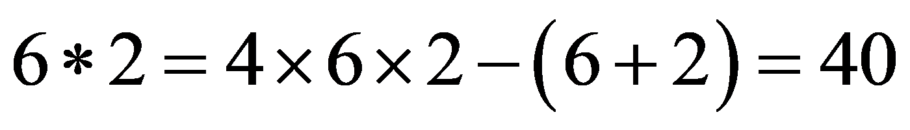
．依据以上内容，求下列式子的值．(1) ；
；
(2)
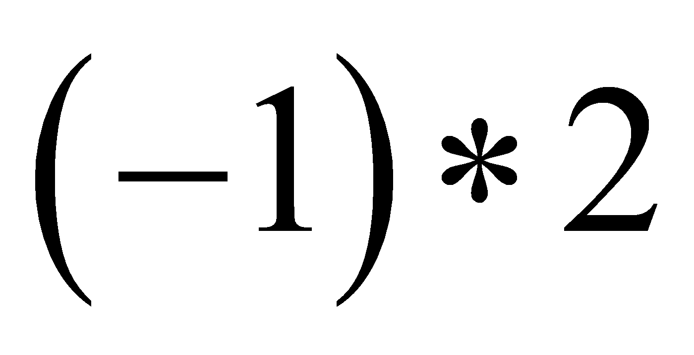
．4.（2023·浙江·七年级假期作业）规定:.
(1)求 的值；
的值；
(2)若 ，求x的值.
，求x的值.
【考点十二 有理数混合运算中的实际应用】
例12.（2023·浙江·七年级假期作业）现有15箱苹果，以每箱25千克为标准，超过的部分用正数来表示，不足的部分用负数来表示，记录如下表
标准质量的差（单位：千克） |
|
| 0 | 2 |
| 3 | |
箱数 | 1 | 3 | 2 | 2 | 2 | 4 | 1 |


请解答下列问题：
(1)这15箱苹果中，最重的一箱比最轻的一箱重 千克．
(2)与标准质量相比，这15箱苹果的总重量共计超过或不足多少千克？
(3)若苹果每千克售价为8元，则这15箱苹果全部售出，共销售多少元？
巩固训练
1.（2023春·黑龙江哈尔滨·六年级哈尔滨德强学校校考期中）某仓库将运进货物记为正，运出货物记为负，一周进出数的记录如下表(单位∶吨)
星期一 | 星期二 | 星期三 | 星期四 | 星期五 | 星期六 | 星期日 | 合计 |
|
|
|
|


表中星期五的进出数被墨水涂污了．
(1)请你算出星期五的进出数；
(2)如果进出的装卸费都是每吨10元那么这一周要付多少元装卸费？
2.（2023春·黑龙江哈尔滨·七年级哈尔滨市虹桥初级中学校校考阶段练习）出租车司机小李某天下午的运营是在一条东西走向的大道上．如果规定向东为正，他这天下午的行程记录如下：（单位：千米） ，
， ，
， ，
， ，
， ，
， ，
，
(1)将最后一名乘客送到目的地时，小张在出车点的哪侧，距离出车点多少千米？
(2)离开下午出发点最远时是__________千米；
(3)若汽车的耗油量为升/千米，油价为元/升，这天下午到送完所有乘客时，共需要支付多少油钱？
3.（2023·浙江·七年级假期作业）出租车司机小明在东西向的大直街运营，若规定向东为正，向西为负，他今天共载了11名乘客，行车里程如下：（单位：千米）

(1)他将最后一名乘客送到目的地时，距离出车时的地点多少千米？
(2)若汽油耗油量为a升/千米，今天小明开车共耗油多少升？（用含a的整式表示）
(3)若出租车按物价部门规定收费：起步价9元（即：不超过，收9元），超过后，超过的部分是每行驶1千米再收 元，小王今天共收入多少元？（不计油钱）
元，小王今天共收入多少元？（不计油钱）
【考点十三 数轴上折叠探究问题】
例13：（23-24七年级上·江苏淮安·阶段练习）已知在纸面上有一数轴（如图），折叠纸面．
(1)若1表示的点与 表示的点重合，则
表示的点重合，则 表示的点与数 表示的点重合；
表示的点与数 表示的点重合；
(2)若表示的点与3表示的点重合，回答以下问题：
①5表示的点与数 表示的点重合；
②若数轴上A、 两点之间的距离为2023（A在的左侧），且A、两点经折叠后重合，求A、两点表示的数是多少？
两点之间的距离为2023（A在的左侧），且A、两点经折叠后重合，求A、两点表示的数是多少？
【变式训练】
1．（23-24七年级上·广西贵港·期末）若纸面上有一数轴，折叠纸面，使表示 的点与表示2的点重合，则与表示5的点重合的点表示的数是（ ）
的点与表示2的点重合，则与表示5的点重合的点表示的数是（ ）
A． B．
B． C．
C． D．
D．
2．（23-24七年级上·浙江杭州·阶段练习）小惠在纸上画了一条数轴后，折叠纸面，使数轴上表示 的点与表示的点重合，若数轴上A，B两点之间的距离为3（A在B的左侧），且A，B两点经上述折叠后重合，则A点表示的数为（ ）
的点与表示的点重合，若数轴上A，B两点之间的距离为3（A在B的左侧），且A，B两点经上述折叠后重合，则A点表示的数为（ ）
A． B． C．
B． C． D．
D．
3．（23-24七年级上·山西太原·阶段练习）将一个数轴折叠，表示 的点与表示1的点重合，同时A、B两点也重合，若数轴上A、B两点间的距离是10，且点A在点B的左侧，则点A表示的数是 ．
的点与表示1的点重合，同时A、B两点也重合，若数轴上A、B两点间的距离是10，且点A在点B的左侧，则点A表示的数是 ．
4．（23-24六年级下·黑龙江哈尔滨·期中）已知在数轴上有三点A，B，C，点A表示的数为a，点B表示的数为b，且a，b满足 ．沿A，C两点中的一点折叠数轴，若另外两点互相重合，则点C表示的数是 ．
．沿A，C两点中的一点折叠数轴，若另外两点互相重合，则点C表示的数是 ．
5．（23-24七年级上·浙江·期末）已知数轴上A点表示的数是，B点表示的数是6，将数轴上线段AB剪下来，并把AB这条线段沿着某点折叠，然后在重叠部分某处剪一刀得到三条线段，若这三条线段的长度之比为 ，则折痕处对应的点所表示的数可能是 ．
，则折痕处对应的点所表示的数可能是 ．

6．（23-24七年级下·黑龙江绥化·阶段练习）点 ，，
，， 在数轴上的位置如图所示．
在数轴上的位置如图所示．
(1)折叠数轴，使数轴上的点和点重合，则点与表示数_____的点重合．
(2)有理数 ，
， 在数轴上对应的点之间的距离可表示为
在数轴上对应的点之间的距离可表示为 ，如
，如 与在数轴上所对应的点之间的距离为．
与在数轴上所对应的点之间的距离为．
①求 的最小值；
的最小值；
②若 ，
， 两点之间的距离为（点在点的左侧），将数轴折叠，使得
两点之间的距离为（点在点的左侧），将数轴折叠，使得 对应的点与对应的点重合，此时，两点也重合，求，两点分别表示的数．
对应的点与对应的点重合，此时，两点也重合，求，两点分别表示的数．
【考点十四 利用点在数轴上的几何意义化简绝对值】
例14.（23-24七年级上·浙江金华·阶段练习）数学实验室：点A、B在数轴上分别表示有理数a、b，A、B两点之间的距离表示为 ，在数轴上A、B两点之间的距离．
，在数轴上A、B两点之间的距离．
利用数形结合思想回答下列问题：
(1)数轴上表示2和5的两点之间的距离是 ，数轴上表示1和 的两点之间的距离是 ；
的两点之间的距离是 ；
(2)数轴上若点A表示的数是x，点B表示的数是 ，则点A和B之间的距离是 ，若
，则点A和B之间的距离是 ，若 ，那么x为 ；
，那么x为 ；
(3)利用数轴，求 的最小值 ；
的最小值 ；
(4)当x是 时，代数式；
巩固训练
1.（23-24七年级上·安徽芜湖·期中）观察下列每对数在数轴上的对应点间的距离：3与5，4与，与 ．并回答下列各题：
．并回答下列各题：
(1)数轴上表示4和 两点间的距离是______；表示和两点间的距离是______．
两点间的距离是______；表示和两点间的距离是______．
(2)若数轴上的点A表示的数为x，点B表示的数为．
①数轴上A、B两点间的距离可以表示为______（用含x的代数式表示）；
②如果数轴上A、B两点间的距离为 ，求x的值．
，求x的值．
(3)直接写出代数式 的最小值为______．
的最小值为______．
2.（23-24七年级上·江苏镇江·阶段练习）如图，若点 、
、 在数轴上分别表示有理数
在数轴上分别表示有理数 、
、 ，、两点之间的距离表示为．则．所以式子的几何意义是数轴上表示有理数
，、两点之间的距离表示为．则．所以式子的几何意义是数轴上表示有理数 的点与表示有理数
的点与表示有理数 的点之间的距离．
的点之间的距离．

根据上述材料，解答下列问题：
(1)若，则 ；
；
(2)若，则 ；
(3)式子的最小值为 ；
(4)若 ，则 ；
，则 ；
(5)式子的最小值为 ，此时 ．
3.（23-24七年级上·云南·阶段练习）（1）探索材料（填空）：
数轴上表示数m和数n的两点之间的距离等于．例如数轴上表示数2和5的两点距离为 ；
；

①数轴上表示数3和的两点距离为 ；
；
②则 的意义可理解为数轴上表示数 和 这两点的距离．
的意义可理解为数轴上表示数 和 这两点的距离．
（2）实际应用（填空）：
①如图1，在工厂的一条流水线上有两个加工点A和B，要在流水线上设一个材料供应点P往两个加工点输送材料 才能使P到A的距离与P到B的距离之和最小；
②如图2，在工厂的一条流水线上有三个加工点A，B，C，要在流水线上设一个材料供应点P往三个加工点输送材料 才能使P到A，B，C三点的距离之和最小；
③如图3，在工厂的一条流水线上有四个加工点A，B，C，D，要在流水线上设一个材料供应点P往四个加工点输送材料 才能使P到A，B，C，D四点的距离之和最小．
（3）结论应用（填空）；
①代数式的最小值是 ；
②代数式 的最小值是 ；
的最小值是 ；
③代数式 的最小值是 ．
的最小值是 ．